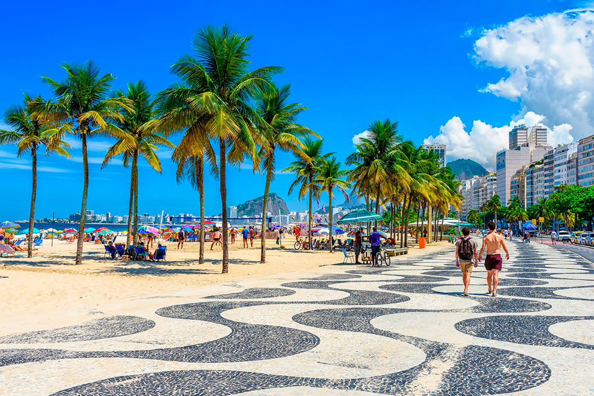
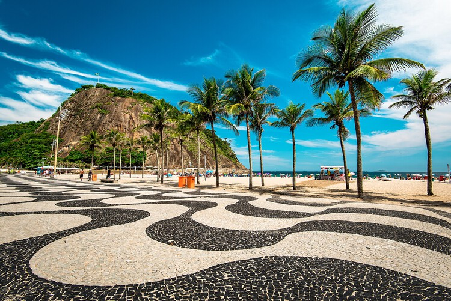

Copacabana - RJ



Restaurantes recomendados
- Nossa primeira recomendação é o restaurante: Marius, conhecido por sua cozinha Brasileira e Mediterrânea.
- Nossa segunda recomendação vai para Cantina: La Trattoria, conhecido por sua tradicional comida italiana.
- Por fim nosso última recomendação é o restaurante: Alloro Al Miramar, outro tradicional restaurante de comida italiana muito elogiado pelos clientes.
O que fazer em Copacabana
- O clássico: você pode tomar sol, pegar um bronze, nadar ou simplismente relaxar na areia com uma água de coco.
- Forte de copacabana:Uma mistura de história, vista linda e café da manhã gostoso (o café do Forte é famoso). Dá pra ver toda a orla da praia de lá.
- Feirinha de copacabana: Acontece principalmente à noite, tem artesanato, lembrancinhas e várias coisinhas cariocas.